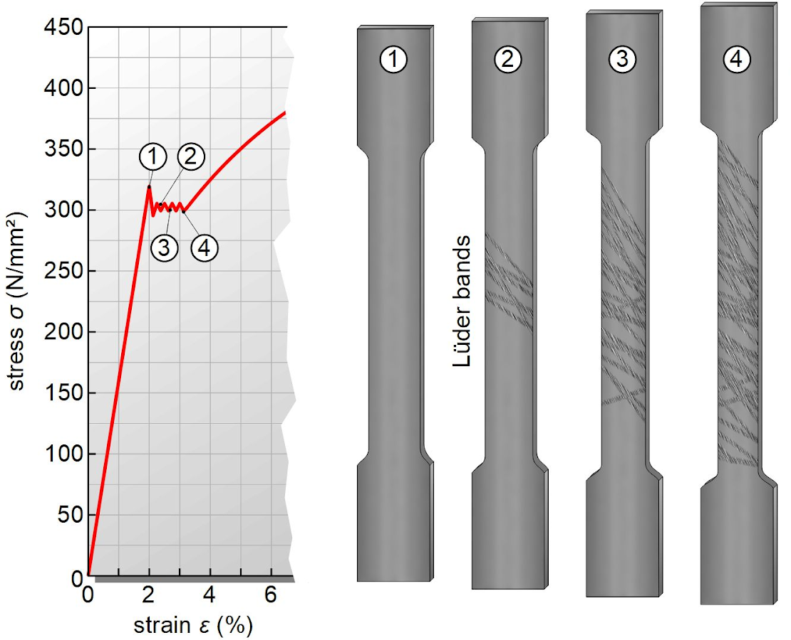
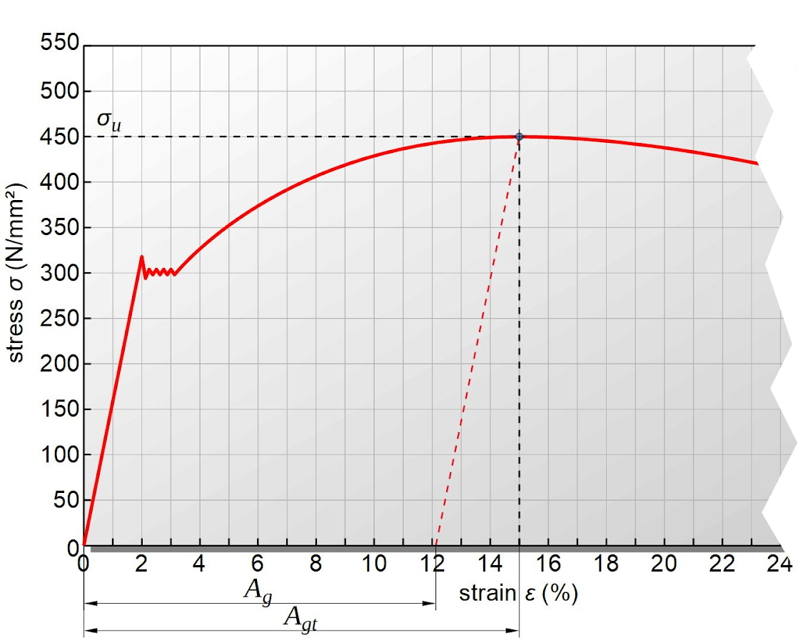
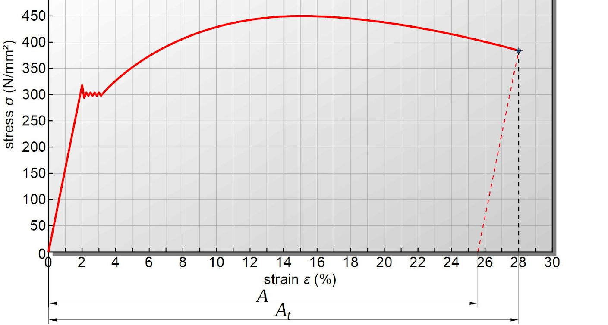

Ensayo de Tracción de una Probeta
El ensayo de tracción forma parte esencial para la construcción de elementos que vemos en el día a día. Cuando se diseña cualquier mecanismo o elemento mecánico sometido a unas cargas(fuerzas),se hace con la seguridad de que el material va a soportarlo. Pero..
¿Cómo podemos confirmar que este material será lo suficientemente resistente?
Por ello desarrollamos el proyecto final integrador, (PFI), el cual consiste en una máquina de ensayo de tracción, con el fin de definir la resistencia elástica, dureza y plasticidad del material, el cual se lo somete a un esfuerzo axial de tracción creciente hasta que se produce la rotura de la misma. Para realizar el ensayo contaremos con probetas de las cuales vamos a determinar su dureza, elasticidad y otros componentes. Los materiales que usaremos seran principalmente seran plastico ,acero y aluminio. Asi ,la probeta de plástico sera desarrollada por un impresora 3D, y la de acero procedera a ser moldeada en el taller de torneria junto con la probeta de aluminio.
Sabiendo esto ,podemos comenzar el Ensayo
La medición de un material o producto en tensión permite obtener un perfil completo de sus propiedades de tracción. Cuando se trazan en un gráfico, estos datos dan como resultado un curva de tensión o deformación que muestra cómo reaccionó el material a las fuerzas que se aplicaban. Los puntos de mayor interés suelen ser el punto de rotura o fallo, el módulo de elasticidad, el límite elástico y la deformación. De tal forma que la curva típica sería tensión vs. deformación o alargamiento, tal y como se muestra en la figura:

Deformaciones elásticas
Definimos elasticidad como la propiedad de un material en virtud de la cual las deformaciones causadas por la aplicación de una fuerza desaparecen cuando cesa la acción de la fuerza. "Un cuerpo completamente elástico se concibe como uno de los que recobra completamente su forma y dimensiones originales al retirarse la carga". ej: caso de un resorte al cual le aplicamos una fuerza. El grado con que una estructura se deforma depende de la magnitud de la tensión impuesta Cuando se cumple que la deformación es proporcional a la tensión, la deformación se denomina deformación elástica. En esta zona del ensayo se cumple la Ley de Hooke.

El módulo de Young este valor nos da la proporción entre la fuerza y la deformación del material. Sería el valor de la pendiente de la recta de la zona elástica.
Fluencia
Es aquel donde aparece un considerable alargamiento del material sin el correspondiente aumento de carga que, incluso puede disminuir la carga mientras dura la fluencia y aumentar de deformación como se ve en la gráfica.La fluencia tiene lugar en la zona de transición entre las deformaciones elásticas y plásticas y se caracteriza por un rápido incremento de la deformación sin aumento apreciable de la carga aplicada. Cuando la fluencia ha terminado, puede aplicarse más carga a la probeta, resultando una curva que se eleva continuamente.
Deformaciones plásticas
Definimos como plasticidad a aquella propiedad que permite al material soportar una deformación permanente sin fracturarse. Todo cuerpo al soportar una fuerza aplicada trata de deformarse en el sentido de aplicación de la fuerza. En el caso del ensayo de tracción, la fuerza se aplica en dirección del eje de ella y por eso se denomina axial, la probeta se alargara en dirección de su longitud y se encogerá en el sentido. A medida que el material se deforma más allá de este punto, la tensión deja de ser proporcional a la deformación y ocurre deformación plástica, la cual es permanente. En la figura se empieza a notar cierta curvatura al comienzo de la deformación plástica, la cual aumenta rápidamente al aumentar la carga.
Estricción
Llegado un punto del ensayo, las deformaciones se concentran en la parte central de la probeta apreciándose una acusada reducción de la sección de la probeta, momento a partir del cual las deformaciones continuarán acumulándose hasta la rotura de la probeta por esa zona. La estricción es la responsable del descenso de la curva tensión-deformación; realmente las tensiones no disminuyen hasta la rotura, sucede que lo que se representa es el cociente de la fuerza aplicada (creciente hasta el comienzo de la estricción) entre la sección inicial: cuando se produce la estricción la sección disminuye (y por tanto también la fuerza necesaria), disminución de sección que no se tiene en cuenta en la representación gráfica. Los materiales frágiles no sufren estricción ni deformaciones plásticas significativas, rompiéndose la probeta de forma brusca.
